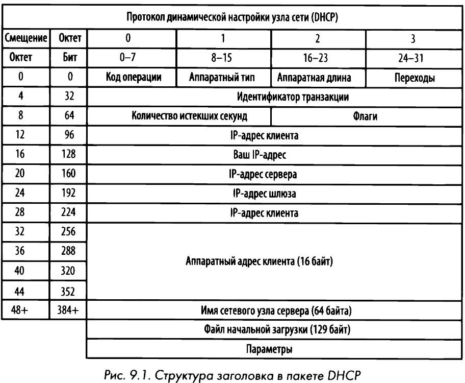
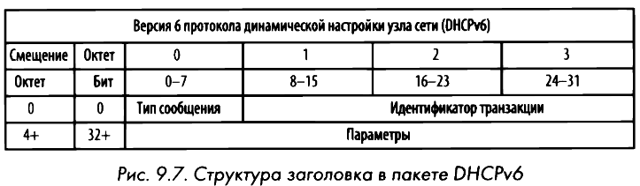

DHCP
Dynamic Host Configuration Protocol или Протокол динамической настройки узла сети отвечает за возможность хосту автоматически получать не только свой IP-адрес, но и адреса других сетевых ресурсов (DNS-сервера, маршрутизатора). В прошлом ВООТР (Bootstrap Protocol - протокол начальной самозагрузки) был предназначен для автоматического присваивания адресов устройствам, подключаемым к сети. Впоследствии протокол был заменен более развитым DHCP.

Процесс инициализации нередко называют процессом DORA:
- Discover (Обнаружение). Пакет 0.0.0.0 через порт 68 отправляется по широковещательному адресу 255.255.255.255 на порт 67 через UDP.
- Offer (Предложение). Сервер отправляет пакет на адрес, который будет предложен клиенту. На самом деле у клиента пока еще нет адреса, поэтому сервер попытается сначала связаться, используя аппаратный адрес по протоколу ARP.
- Request (Запрос). Пакет по-прежнему поступает из сетевого узла с IР-адресом 0.0.0.0, поскольку процесс получения IР-адреса еще не завершен. Данный пакет подобен пакету обнаружения в том отношении, что вся содержащаяся в нем информация об IР-адресах обнуляется. В поле DHCP Server ldentifier содержится IР-адрес сервера.
- Acknowledgment (Подтверждение). Сервер посылает клиенту запрашиваемые IР-адреса в пакете подтверждения, записывая эту информацию в своей базе данных.
Когда срок аренды адреса подходит к концу, клиенту и серверу достаточно обменяться Request/Acknowledgment пакетами для возобновления.
Злоумышленники могут использовать DHCP, устанавливая в сети мошеннические DHCP-серверы, проводя атаки типа "человек посередине" (Man-in-the-Middle, MITM) или даже атаки типа "отказ в обслуживании" (Denial of Service, DoS).
DHCPv6
Стандарт RFC 3315. Поскольку версия DHCPv6 не построена по принципу протокола ВООТР, то структура заголовка становится проще:

Вместо DORA происходит SARR:
- Solicit (Опрос). Клиент посылает пакет по многоадресатному адресу (ff02: :1:2), чтобы попытаться обнаружить доступные DНСРv6-серверы.
- Advertise (Анонс). Доступный сервер отвечает непосредственно клиенту, что он доступен для предоставления сведений об адресах и конфигурации.
- Request (Запрос). Клиент посылает формальный запрос сведений о конфигурации доступному серверу.
- Reply (Ответ). Сервер посылает все имеющиеся сведения о конфигурации.